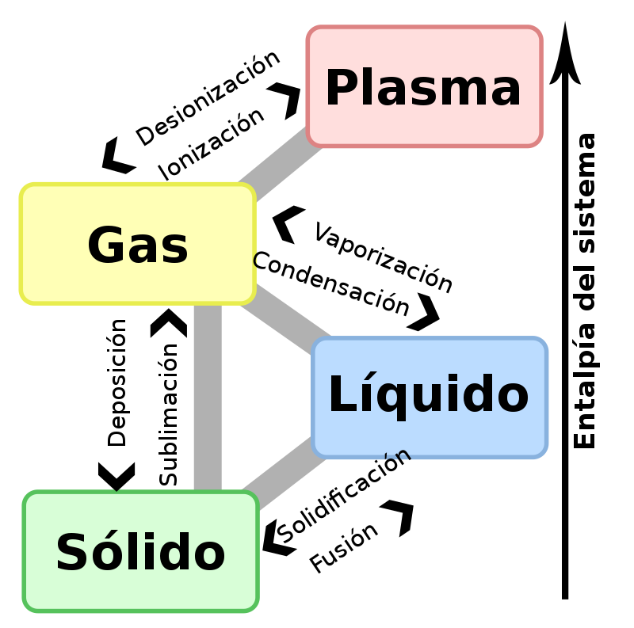
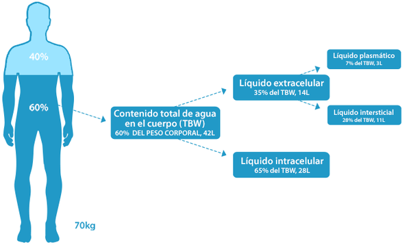
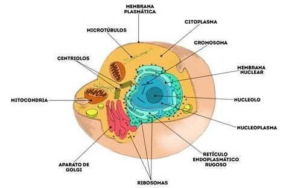
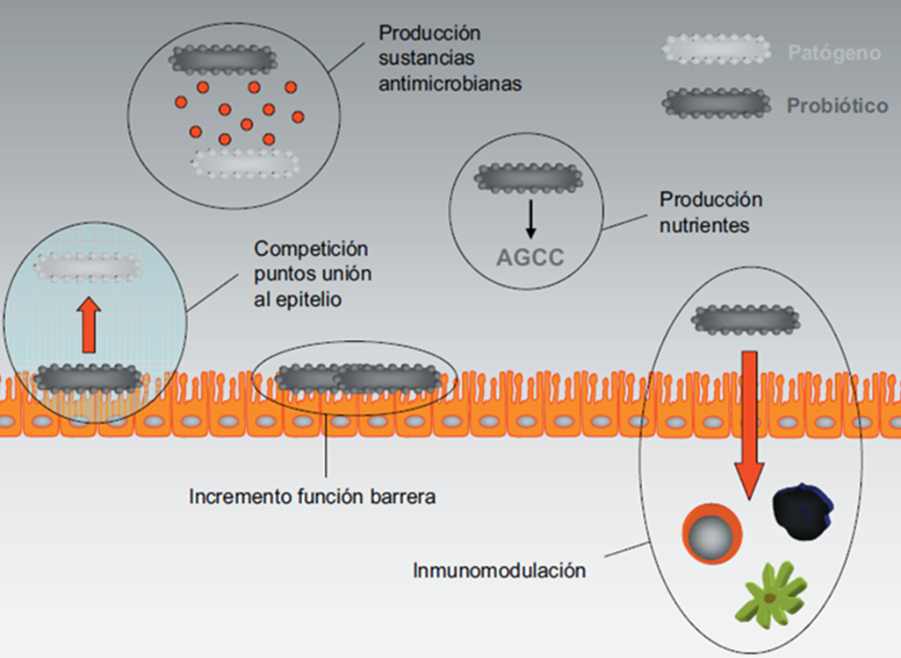

EL AGUA MARINA

PLASMA MARINO Y PLASMA HUMANO
0. UNA AMIGA OLVIDADA
Debemos tener en cuenta la aportación que puede hacer el agua de mar a nuestras vidas.
Algunas características comunes de la sangre y el agua de mar son que ninguna de las dos se puede reproducir en
laboratorio, otra es la capacidad de homeostasis (autorregulación de propiedades), la siguiente es la presencia
específica y similar de oligoelementos (elemento químico indispensable), también podemos encontrar en las dos un
poder antibiótico y autoregenerador (Zobell ya declaraba en 1936 que los vertidos de aguas residuales al mar
quedaban destruidos en dos días).
A modo de resumen, unos cuantos datos de utilidad:
- En el agua de mar están todos los elementos basicos para la vida en proporción correcta y en estado biodisponible.
- El cuerpo necesita aproximadamente 6 gramos de sales diarios. Que más natural que darselos en su propio medio.
- Se intenta aportar conciencia para la creación de dispensarios marinos en partes del planeta que son muy pobres y que la desnutrición afecta a millones de seres que podrían ser tratados con el agua de mar.
- En Estados Unidos también se está empleando agua de mar para problemas de próstata, psoriasis, alopecia, artritis, osteoporosis, asma, gengivitis, desequilibrios del sistema nervioso central (SNC), alcoholismo, drogodependencia, infecciones, fatiga crónica, embarazo, lactancia, estrés, etc.
- El agua marina es la más equilibrada de todas las aguas termales. Al sumergirnos en ella a una temperatura de unos 33º C, sus sustancias nutritivas penetran en el cuerpo por la acción del calor (vasodilatación).
- El Dr. Schlegel declara la desaparición de la pirosis (Sensación de fuego o quemadura en el estómago que llega hasta el esófago) en gastritis alérgicas.
- Entre otras cosas las mejoras detectadas son: Importante mejora en los rendimientos deportivos, rehidratación de la piel, mejoras en fosas nasales (respiración, ronquidos, sinusitis).

Tabla 1. Diferencias que hay entre el Agua Marina y Plasma Sanguíneo
Una persona que pesa 80 Kg solo pesará 9 Kg en el mar por 20 en el agua dulce (Principio de Arquímedes)
1. EL MEDIO MARINO
El medio marino es el ecosistema más importante de la Tierra, que recibe de él su nombre de Planeta Azul. Sólo por
su masa térmica y el poder calorífico del agua, constituye el volante de inercia térmico del planeta. Sin él las noches
serían polares, los días un horno y la vida imposible. Es un elemento vital que asegura la conservación de nuestro
medio en unos límites tolerables para la vida.
La radiación solar, fuente de energía primordial, es filtrada por la atmósfera y atemperada por la masa oceánica para
animar la vida terrestre. La oceanografía física y biológica reconoce su efecto fundamental. Su acción sobre la
atmósfera y la superficie de los océanos rige las corrientes atmosféricas que a su vez inducen las corrientes
oceánicas. Mareas, corrientes y diversos movimientos mantienen en continuo las aguas marinas.
Esta agitación, por los cambios que induce, crea las condiciones para un crecimiento orgánico prodigioso. La mitad
de la biomasa terrestre se desarrolla en los océanos. Por ejemplo, al océano austral, de 30 millones de km2, o sea el
10% de la superficie oceánica mundial, se le llama «la bomba planetaria» porque su corriente circumpolar hace
subir a la superficie las aguas cálidas del Atlántico. Este removido enriquece en sales minerales las aguas
superficiales y constituyen una provisión alimenticia inagotable para el fitoplancton.

El ecosistema marino, puesto en marcha por la energía solar, desempeña una función de primer orden en el ciclo del oxígeno del organismo terrestre.
1.1 LA REGULACIOÓN DEL pH MARINO
La epifase marina es la sede de intensos intercambios gaseosos. Su composición y su estructura influyen en la
rapidez de estos intercambios gaseosos entre la hidrosfera y la atmósfera. Particularmente, tiende a establecerse un
equilibrio entre el CO2 atmosférico y el CO2 del agua de mar, disuelto o en forma de aniones carbónicos y bicarbónicos.
La actividad de la biomasa marina toma una parte del carbono atmosférico que el pH alcalino del agua de mar
transforma en aniones que entran así en el ciclo del carbono marino para ser metabolizados en él o precipitados
como carbonato. Este sistema confiere al agua de mar un importante poder tampón. Esto es vital para los
organismos marinos, que por lo general no pueden soportar grandes variaciones de pH.


Figura 1. Equilibrio del pH marino y el tampón abierto carbonato-bicarbonato
1.2 LA REGULACIOÓN ELECTROLÍTICA
Si se estudia la regulación de las diferentes sales y oligoelementos que constituyen la matriz salina marina, se
observa que la proporción y la forma en que está presente cada uno de estos elementos no es accidental. Las
proporciones relativas de los 11 cationes principales pueden considerarse constantes. Cualquiera que sea la
naturaleza de los aluviones fluviales, del polvo transportado por el viento (por ejemplo la masa intercambiada en un
año entre el océano y la atmósfera en todo el planeta se evalúa en mil toneladas) o los fondos marinos removidos
por corrientes oceánicas, la concentración relativa de minerales en el océano es estable.
El agua de mar debe su composición al buen funcionamiento del ecosistema. Las plantas y los animales son los
principales responsables de la transformación y sedimentación de los elementos minerales. La regulación de las
diferentes poblaciones de microorganismos dentro del ecosistema afecta directamente a la composición mineral del
medio marino.

Tabla 2. Concentración de los elementos en el agua marina y en su entorno, amitiendo que cada kg de ella
ha disuelto 600 g de roca, como estiman los geógrafos (Ivanoff. 1975)
Tomemos por ejemplo el ciclo del fósforo esquematizado en la figura 2. Se constata que su proporción está fijada
por la «digestión» operada por la biomasa. Lo que es válido para el fósforo lo es también para cada uno de los
elementos disueltos en el medio marino.

Figura 2. Ciclo del fósforo en el océano
De este modo, el ecosistema produce una matriz salina cuya naturaleza y forma no se corresponden en nada con la simple disolución de elementos minerales resultado de su encuentro al azar con el agua. Primero, la proporción está regulada; segundo, su forma es específica. Por ejemplo, la solubilidad del carbonato de calcio presente en el agua de mar es cien veces superior en el medio marino, a la solubilidad observada en su solución en agua destilada.

Tabla 3. Coeficiente de disociación de sales en agua marina y agua destilada (Ivannoff, 1975)
No es exagerado, pues, hablar de organismo marino. Éste posee su propia homeostasis y su comportamiento presenta una analogía impresionante con la del medio interno del organismo humano. En ambos, los mismos elementos desempeñan funciones análogas, por medio de reacciones o de cadenas de reacciones vecinas con el fin de asegurar las mismas funciones y en concentraciones similares. Por ejemplo, en el interior del cuerpo humano, el tampón principal es carbonato-bicarbonato, cuyo ciclo, ligado al mecanismo respiratorio, permite compensar la aportación constante de subproductos metabólicos ácidos a fin de mantener un pH orgánico ligeramente alcalino. Regula igualmente la presión parcial del CO2 y del oxígeno disueltos en los líquidos fisiológicos. En el medio marino este mismo tampón carbonato-bicarbonato permite, en sus intercambios con la atmósfera a través de la epifase marina, regular por una parte la presión parcial del CO2 y oxígeno disueltos y por otra el pH alcalino del agua de mar.
2. EL MEDIO INTERNO
El mantenimiento de la vida precisa unas condiciones fisicoquímicas específicas. A lo largo de la evolución
zoológica, la conquista de biotopos cuyas condiciones están en perpetua variación, ha exigido a los seres vivos la
capacidad de aislarse de las variaciones del medio externo.
La respuesta fisiológica a este apremio ha sido el desarrollo de un medio interno estable, cuyo concepto fue
introducido por Claude Bernard en 1865: «Entre los seres vivos desarrollados, hay por lo menos dos medios que se
han de tener en cuenta: el medio exterior o extraorgánico, y el medio interno o intraorgánico (...) Es el medio interno
de los seres vivos el que está en relación inmediata con las manifestaciones vitales normales o patológicas de los
elementos orgánicos (...) Todos los mecanismos vitales, por variados que sean, no tienen siempre más que un
principio: mantener la unidad de las condiciones de la vida en el medio interno». Bernard considera que «la fijeza del
medio interno es la condición para una vida libre, independiente» y que ésta «supone un perfeccionamiento tal del
organismo, que las variaciones externas están en cada momento compensadas y equilibradas».

A diferencia de un sistema en equilibrio termodinámico sometido a las leyes del entorno, el ser vivo resiste estas
variaciones y presenta estados estabilizados por fenómenos de transporte de materia y de energía, fenómenos
disipativos que permiten al organismo mantener estable su entropía. En 1929, el fisiólogo W.B. Cannon propuso en
Wisdom of the body el término de homeostasis para referirse al mantenimiento del medio interno en un estado
estable, independiente de fluctuaciones externas:
«Los seres superiores constituyen un sistema abierto que presenta numerosas relaciones con el entorno. Las
modificaciones del medio desencadenan reacciones en el sistema o lo afectan directamente, dando lugar a
perturbaciones internas de éste. Tales perturbaciones son normalmente mantenidas en límites estrechos porque
unos ajustes automáticos que sobrevienen en el interior del sistema entran en acción, evitándose de esa manera
amplias oscilaciones. Las reacciones fisiológicas coordinadas que mantienen la mayoría de los estados
estacionarios del cuerpo, son tan complejas y específicas de los organismos vivos, que se ha sugerido el término de
homeostasis».

Esquemáticamente, se puede considerar el medio interno como formado por un conjunto de líquidos que circulan y
rodean las células. El compartimento extracelular constituye el 33% del agua total del organismo, lo que equivale al
20% del peso del cuerpo y aproximadamente 15 litros. Está repartido en:
- líquido intersticial, que ocupa los espacios intercelulares: 20% del agua total, lo que equivale al 12% del peso corporal y 10 litros
- líquido plasmático, 6% del agua total, que equivale al 5% del peso del cuerpo y 3 litros
- líquido linfático, que aparece al drenarse el líquido intersticial hacia el sistema venoso: alrededor del 2% del agua total
- líquido transcelular, producido por los procesos de transporte activo que tiene lugar en las membranas epiteliales (secreciones glandulares digestivas, líquido cefalorraquídeo, ocular, etc.): alrededor del 3% del agua total.
La composición, estructura y equilibrio del medio interno -en una palabra: su homeostasis- dependen totalmente de la actividad celular. Son el resultado de un intenso trabajo y suponen una de las principales actividades del metabolismo. Recíprocamente, la calidad del funcionamiento celular depende de la integridad del medio interno. Si la suma de la actividad celular permite la elaboración y mantenimiento de la homeostasis del medio interno, la integridad del medio interno permite una vida celular equilibrada y en consecuencia asegura la salud del organismo.
El medio interno ocupa un lugar único en fisiología y la noción de homeostasis está ligada a él más que a ningún otro sistema. Es pasivo, puesto que no produce nada por sí mismo, no constituye un órgano, pero es imprescindible porque todas las funciones suceden y se construyen en este medio.

El estudio del medio interno está particularmente relacionado con la noción de terreno. Por terreno se entiende el conjunto de predisposiciones de una persona a desarrollar ciertos tipos de patologías. Desde un punto de vista fisiológico, el terreno debe identificarse con el medio interno. Su estado refleja perfectamente la salud del organismo e indica sus predisposiciones. El conjunto de desviaciones fisiológicas y desequilibrios patológicos se inscriben en él.
2.1 REGULACIÓN TÉRMICA
Los grandes equilibrios biológicos interactúan en una dinámica constante, protegiendo los niveles de prioridad de las
funciones vitales. El organismo mantiene constante su temperatura central hipotalámica (37,2ºC) cuyo cambio
(descenso) no podría ser tolerado más que algunos segundos. La homeotermia se realiza en un intervalo de
temperatura limitado y el umbral letal se sitúa por debajo de 26ºC y por encima de 44ºC actúa sobre:
- La producción calórica del metabolismo basal.
- Los intercambios térmicos con el medio externo.
- Los mecanismos reguladores de la temperatura.
- Un comportamiento adaptado, por medio del cual el ser humano crea su propio microclima.

El organismo está compuesto en su mayoría de agua. Por su calor específico elevado constituye una reserva
térmica corporal y asegura la protección frente a grandes variaciones de temperatura. Por otro lado, la elevada
temperatura de evaporación del agua permite una evacuación de calor significativa con el sudor evaporado.
Así, el medio interno interviene a diferentes niveles:
- Homogeneiza el calor metabólico por el cual el sistema circulatorio desempeña la función de transportador de calorías y de adaptación a las variaciones de la temperatura externa por medio de sistemas arteriovenosos a contra corriente: en los miembros, la sangre venosa que retorna puede circular en profundidad en contacto con la arteria (si hace frío) evitando una pérdida de calor, o por la superficie, bajo la piel (si hace calor), volviendo a la parte derecha del corazón por las venas superficiales.
- La termólisis, por la evaporación y el sudor, puede movilizar importantes cantidades de agua capaces de llegar a alcanzar en ciertas circunstancias más de un litro/hora e interferir en la homeostasis hidroelectrolítica.
2.2 REGULACIÓN DEL pH
La rapidez de las reacciones bioquímicas está en íntima relación con la concentración de iones H+ del medio. El pH
interviene en la conformación y la actividad de las proteínas, en particular de proteínas enzimáticas.
La concentración de iones H+ en el medio interno es marcadamente constante: el pH de la sangre arterial oscila
entre 7,38 y 7,43 y los límites extremos compatibles con la vida son 7,10 y 7,80.
Frente a las agresiones ácidas o básicas, el organismo pone en juego tres líneas de defensa sucesivas:
1. Los tampones físico-químicos del medio interno. Amortiguan inmediatamente el choque en un tiempo del
orden del segundo.
2. El sistema respiratorio puede intervenir en segundo lugar controlando la eliminación pulmonar de CO2. El
sistema bicarbonato/ácido carbónico tiene una misión fundamental gracias a su abundancia en el organismo
y sobre todo porque constituye el único tampón abierto en el cual la cantidad total (CO3H-) + CO3H2
depende del sistema neuroventilatorio, siendo el CO2 volátil.
3. El riñón interviene en última instancia, asegurando la corrección final de las alteraciones gracias a su
capacidad para eliminar los iones H+ y reabsorber el ion bicarbonato HCO3-.

Figura 3. Esquema de los mecanismos endocrinos de termorregulación
Sin entrar en detalles del proceso de regulación, es notable la importancia de la función del sector plasmático, que es un intermediario obligatorio para los otros sectores, así como el más accesible para tomar mediciones.

Figura 4. Equilibrio pH orgánico ácido-básico
2.3 REGULACIÓN HIDROELECTROLÍTICA
A. Agua Total
El agua es el principal constituyente del organismo, en promedio es el 60% del peso corporal. Está desigualmente
repartida según los tejidos y los órganos. La homogeneidad del conjunto se logra a través del sistema circulatorio.

Tabla 4. Agua total que contiene el organismo en función de la edad, expresada en porcentaje del peso corporal
El compartimento extracelular actúa como un sistema de circulación de doble corriente del agua y las sustancias
minerales y orgánicas. Este cruce de caminos del movimiento hidroiónico se compone de dos sectores: el sector
vascular en el cual el agua es canalizada por los vasos arteriales a la ida, los vasos venosos y linfáticos a la vuelta,
y, de mucho más alcance, el sector intersticial donde el agua se filtra por los innumerables intersticios celulares.
El líquido intersticial, verdadero «mar interior», constituye un ultrafiltrado de plasma que penetra constantemente los
tejidos próximos al extremo de los capilares arteriales. Unas cifras ilustran la importancia de los fenómenos de
filtración de esta red microcirculatoria: 100.000 Km. de longitud y 6.000 km2 de superficie.
«La bomba cardiaca rinde unos 8.400 litros en 24 horas. 20 litros se filtran por los capilares, 17 litros son
reabsorbidos por éstos y 3 se reabsorben por vía linfática en 24 horas. Los conductos linfáticos evacuan
constantemente el excedente filtrado no reabsorbido y la totalidad del flujo proteico extravasado... El sistema
linfático muestra ser un sistema de bombeo que asegura la estabilidad de la presión intersticial, y a un nivel inferior a
la presión atmosférica...» (Précis de physiologie humaine, Ellipse, 1992).
B. Elementos Minerales
Los elementos minerales del organismo pueden presentarse bajo tres formas:
1. En estado sólido, cristalizado, no ionizado.
2. En solución, en los medios intra y extracelulares.
3. En la combinación de compuestos orgánicos.
Sin embargo son permanentes los cambios entre estas diferentes formas. Las sales minerales principales se
distribuyen en partes ionizadas intercambiables y en partes enlazadas.

Figura 5. Gradiente de presioón entre las terminacones arterial y venosa
La homeostasis sólo se realiza gracias a un flujo correctamente regulado del agua, los iones, la energía y la
información intercambiadas con el medio, y este equilibrio se realiza por medio de intercambiadores. Entre el
organismo y el medio se interpone siempre una capa celular: el endotelio del intercambiador pulmonar, células
epiteliales del intercambiador cutáneo, digestivo, renal. En este último intercambiador, la homeostasis
hidroelectrolítica se realiza principalmente por los movimientos de agua y del NaCl.

Tabla 5. Composición de los compartimientos hídricos
Finalmente, la regulación hidromineral, la de los volúmenes líquidos y de su osmolaridad, está asegurada por un
sistema neuro-endocrino, sensible a la composición iónica y al volumen de los medios que bañan las células por una
parte y el medio plasmático por otra.
2.4 LOS CAMBIOS HIDROELECTROLÍTICOS
Los diferentes compartimentos extracelulares tienen una idéntica osmolaridad de 286±4 miliosmoles y son neutros
eléctricamente. Los intercambios entre compartimentos se hacen a través de fenómenos osmóticos, mientras que los
intercambios iónicos entre los líquidos intracelulares y intersticiales se producen esencialmente por transporte activo.
La membrana celular separa de manera radical los dos compartimentos en los que la concentración de cationes,
aniones, proteínas y glucosa es distinta. Los intercambios iónicos por difusión pasiva transmembranar son muy
débiles. El cuanto al agua, se difunde libremente a través de la membrana celular y la pared de los capilares. Su
metabolismo no puede estar disociado del de los electrólitos. La regulación de la hidratación del sector extracelular
depende del sodio y toda modificación será seguida por la modificación paralela del balance hídrico.
La regulación de la hidratación del sector intracelular depende de la osmolidad de los líquidos extracelulares. A este
nivel aparece la importante función del sistema neurohormonal complejo, que actúa en la eliminación de agua y se
encarga sobre todo de regular el balance sódico.

Tabla 6. Equilibrio hidroeléctrico
«Se puede decir, pues, que el ser humano vive en el agua, incluso en el agua corriente, sin que por otra
parte, a pesar de los cambios continuos haya variaciones apreciables en la concentración del agua en los
distintos órganos y tejidos.» (Biochimie medicale, Boulange-Polonowski, Masson 1979).
RECORDATORIO
El agua, solvente y reactivo químico, debe sus propiedades excepcionales a la capacidad de establecer puentes de
hidrógeno. Éstos «son estables a temperatura ambiente pero al contrario que los compuestos covalentes, pueden
romperse o torcerse con un ligero aporte de energía, por ejemplo por efecto de fluctuaciones térmicas del medio. Son
modificables y evolucionan, propiedades fundamentales en biología, lo que confiere al agua propiedades excepcionales.
Desempeñan una función esencial en el proceso de transferencia de protones entre las moléculas rebajando las barreras
energéticas, favoreciendo la formación de compuestos intermedios, fenómeno esencial en el almacenamiento de la
energía fotónica, y activando la hidrólisis. Precisamente la quimotripsina pancreática actúa mediante la trasferencia de
protones. Por último se organizan en configuraciones específicas donde cada oxígeno forma un tetraedro con sus cuatro
vecinos (...) A la temperatura de los seres vivos, la ruptura de ciertos enlaces acarrea la formación de estructuras de 6, 7
u 8 moléculas, permitiendo al agua organizarse alrededor de un ion, lo cual aumenta su compactación.» (Précis de
physiologie humaine, Ellipse, 1992).

3. EL CONCEPTO DE PLASMA MARINO
El medio interno y el agua de mar cumplen pues las mismas funciones, uno en relación con las células, otro en
relación con los microorganismos del ecosistema marino. Uno y otro son resultado de un trabajo constante,
programado y esencial, puesto que se trata de en ambos casos del mantenimiento de condiciones físico-químicas
acordes con el desarrollo de la vida. Los dos son, pues, medios minerales cuya homeostasis y estructura química
son el fruto de una regulación biológica. Es más, el análisis muestra que sus composiciones respectivas son
idénticas.
En efecto, el estudio del mundo vivo demuestra que la simple naturaleza de un elemento
no determina sus propiedades biológicas, sino la forma y la estructura específica en que está presente. La
bioquímica se distingue de la química mineral no por la naturaleza de los átomos estudiados sino por la de las
estructuras propias de la materia viva en que sus átomos están asociados. La bioquímica revela que la actividad de
las moléculas depende esencialmente de su configuración espacial, por citar sólo un factor cuya importancia es
determinante cuando se estudia los enzimas, las hormonas, los ácidos nucleicos, etc. Por tanto la composición del
sustrato mineral en que estas moléculas orgánicas se sitúan tiene una importancia determinante sobre su actividad
biótica.
Figura 6. Presentación comparada de la composición salina del agua de mar y de los líquidos orgánicos (valor de composiciones orgánicas según Ganong, 1979).
Cuando estudiamos la estructura química del agua de mar, de la que desconocemos muchos aspectos, resaltan dos
constantes.
Por una parte, las sales que componen la matriz salina de las aguas marinas tienen un producto de solubilidad
distinto al de las mismas sales disueltas en agua destilada. Por tanto la hidratación de las sales marinas no se debe
sólo a su naturaleza específica, sino que debe sus propiedades particulares a la transformación de estos elementos
en el interior de los ciclos del ecosistema. Se puede hablar de la dinamización de los elementos marinos. De hecho,
la matriz salina de las aguas marinas constituye un medio natural único que es prácticamente imposible reproducir
de modo artificial. Esta hidratación específica de las sales condiciona las características físicas de la misma agua,
sustrato del metabolismo.
Por otra parte, al igual que en su composición, la naturaleza de las sales y la forma en que están presentes los
diferentes elementos en la matriz salina de las aguas marinas, están próximas a lo que encontramos en el medio
interno.
Desde un punto de vista terapéutico, es precisamente la forma específica de los oligoelementos y de las sales
minerales lo que nos interesa, porque buscamos la acción que ellos inducen. Esta es la hipótesis fundamental en
que se basa todo el estudio del concepto de plasma marino y que fue presentada por primera vez en 1897 por René
Quinton: «Hay una identidad fisiológica entre el plasma marino y el plasma humano», es decir que el plasma marino
tiene la misma aptitud que el plasma humano para servir de soporte mineral a la vida celular. No se trata en absoluto
de una simple solución salada cuya composición se acerca a la del líquido extracelular, sino de un auténtico suero
fisiológico en perfecta ósmosis con el medio interno, que satisface totalmente las necesidades minerales de las
células.
4. LA EXPERIMENTACIÓN
La experimentación biológica se muestra indispensable para demostrar el efecto fisiológico de una
solución mineral.
La práctica médica, más que cualquier otro experimento, ha demostrado lo bien fundado de esta hipótesis.
Recordemos que ha existido una práctica médica a gran escala, principalmente en Francia entre 1910 y 1945. Los
resultados son elocuentes y no es necesario nada más para demostrar las sólidas bases del método. El propósito de
este trabajo es más ayudar a comprender mejor porqué y cómo el concepto de plasma marino es un triunfo médico
de primer orden, tanto en la práctica cotidiana como en la medicina de urgencia. Se dieron millones de inyecciones,
principalmente en los dispensarios marinos creados por el Dr. Jarricot y Quinton. El número de niños salvados fue
tal, que se les llamó «bebés Quinton». Por otra parte el uso de este producto sólo se interrumpió por razones
económicas y técnicas externas a cualquier motivo terapéutico. Hoy un laboratorio farmacéutico vuelve a envasar
este agua dándole el nombre de Quinton® Hipertonic a la concentración al 33% y de Quinton® Isotonic a la
concentración al 9%, correspondiente éste al antiguo y ya gastado «Plasma de Quinton».
Desde el punto de vista biológico se han llevado a cabo diferentes experimentos y en particular, la medida de la actividad y de la supervivencia de glóbulos blancos en varios tipos de soluciones salinas. El glóbulo blanco es un indicador especialmente interesante del medio interno porque vive y se desplaza en él de forma autónoma, sin estar sujeto, como las otras células, a un tejido específico. Los diversos experimentos realizadas han demostrado que el tiempo de supervivencia de los glóbulos blancos en un plasma marino correctamente preparado es superior al observado en cualquier otro preparado mineral y el único medio en que los glóbulos blancos se han multiplicado.
5. PRINCIPIOS DE ACCIÓN TERAPÉUTA
El uso del plasma marino en sus diferentes formas es un método en sí mismo. La dosis, la frecuencia, la vía de
absorción, la duración, etc. determinarán la eficacia del tratamiento. Sólo una aplicación correcta permite obtener
los resultados terapéuticos esperados.
La acción terapéutica puede considerarse en torno a tres ejes: la acción plástica y mecánica del plasma marino, que
garantiza una reposición hidroeléctrica; la acción catalítica y funcional de los oligoelementos; y la regeneración
celular. Estas tres acciones escogidas son tres aspectos del efecto general del método marino, que actúa en
particular como un todo, a través del conjunto de los minerales, que sinérgicamente catalizan el metabolismo.
Figura 7. Los oligoelementos
5.1 LA RECARGA HIDROELECTRÍCA
Esquemáticamente, las sales, a través de mecanismos de presión osmótica y de la regulación renal, van a asegurar el balance hídrico del organismo. El efecto mecánico del plasma marino como agente de rehidratación es inmediato. El Dr. Mouezy-Eon dice: «El sodio es la sal que regula la entrada de agua en el protoplasma y el núcleo celular y sin duda permite secundariamente asimilar o retener las otras sales». Sin embargo su acción es mucho más profunda que la obtenida con una simple solución de cloruro de sodio al 9%. Como escribe el Dr. Jarricot: «Todo sucede como si con las inyecciones de agua de mar fuera restablecida la capacidad de los tejidos para retener agua».
Figura 8. Agua e hidratación: Bases fisiológicas en adultos
Esta acción afecta directamente a los problemas de nutrición, de asimilación y de eliminación. Permite asegurar un tratamiento hidro-electrolítico en las patologías agudas siguientes: deshidratación, diarreas agudas, shocks hipovolémicos, quemaduras y reanimación pre y postoperatoria. Permite también regular las patologías crónicas graves con carencias, desmineralización y espasmos. La experiencia ha demostrado que el plasma marino es un aliado valioso en diarreas, especialmente infantiles, así como en dos grandes patologías que provocan una deshidratación profunda: el tifus y el cólera.
5.2 EL REEQUILIBRIO FUNCIONAL ENZIMÁTICO
Mientras la recarga hidro-electrolítica afecta directamente al medio interno, la acción funcional del plasma marino se
sitúa en la actividad citoplasmática. Los oligoelementos afectan al conjunto de ciclos metabólicos, generales y
específicos, por ejemplo modificando las estructuras, las secreciones hormonales y la producción de anticuerpos.
Cuando se habla de la acción de los oligoelementos, hay que tener en cuenta la forma en que se hallan.
Recordemos su efecto en dosis ínfimas, la multitud de interacciones puestas en juego y la variedad de elementos
necesaria. La calidad de los elementos asimilados es más importante que su simple presencia. Los minerales
marinos en forma de plasma marino tienen una biodisponibilidad excepcional. El plasma marino contiene los 92
elementos utilizados por el metabolismo, de una forma completa, equilibrada y asimilable.
El impacto terapéutico es por tanto considerable, puesto que la mayoría de las enfermedades mantienen o
desarrollan un desequilibrio electrolítico. Esto se aplica particularmente para las graves, en las que el tratamiento de
terreno mineral se impone como un complemento a menudo inevitable. Según el tipo de formas utilizadas, la acción
será diferente, aunque en conjunto se la pueda considerar como una catálisis del metabolismo mineral y una
regulación o restablecimiento del metabolismo mineral. Se va poder, pues, actuar sobre los bloqueos enzimáticos, la
anemia, la inmunidad y los procesos infecciosos, etc.
En esto el plasma marino es único para inducir el equilibrio mineral.
5.3 LA REGENERACIÓN CELULAR
Renovando el medio interno e induciendo el equilibrio mineral, el plasma marino contribuye a reforzar el equilibrio del organismo. El tercer aspecto de su acción, la regeneración celular, puede situarse al nivel del núcleo celular. Las modificaciones del medio interno serán trasmitidas gradualmente hasta la mitocondria, el cromoplasto y, por supuesto, el núcleo, donde ocurrirán de nuevo cambios en el microentorno de las secuencias del ADN. La dinamización de los elementos marinos y la calidad de su presencia es más determinante que en ninguna otra parte. Recordemos la acción de los elementos metálicos incluso en el material genético y la importancia de la forma de los oligoelementos necesarios para un desarrollo óptimo de la transcripción ADN-ARN.

Hoy existen numerosos trabajos dedicados a la estructura del agua, soporte de fenómenos vitales, y su importancia.
Más precisamente aún, el estudio del plasma marino, constituido por agua, y por sales minerales y oligoelementos,
conduce a la consideración de que es la matriz fundamental de fenómenos biológicos, tanto oceánicos como
humanos.
En conclusión, el plasma marino, actuando en la parte más básica del metabolismo de manera decisiva e inmediata
sobre el estado fisiológico del plasma mineral humano, tiene un nivel de acción único que le es propio. Comprender
este nivel de acción único es la clave que permite razonar sobre su uso terapéutico. El plasma marino no va a actuar
contra tal o cual síntoma, sino que va a contribuir al buen funcionamiento del metabolismo. Regenera el medio
interno favoreciendo de este modo la actividad celular, y toda el organismo se endereza.
6. APLICACIÓN INESPECÍFICA
Al actuar sobre la base de los mecanismos fisiológicos, la acción del plasma marino es inespecífica. El mismo mecanismo se encuentra en diferentes procesos. La decisión de administrar plasma marino en solución isotónica viene determinada por la similitud de las causas, no de los síntomas. He aquí una aproximación, no exhaustiva, a los mecanismos que se encuentran en diferentes procesos patológicos (inflamación, infección) y al aspecto funcional de los oligoelementos.
6.1 ASPECTO FUNCIONAL DE LOS OLIGOELEMENTOS
La función de los oligoelementos en el organismo es triple.
En primer lugar estructuran la materia viva. Por ejemplo el zinc,
por medio de las proteínas dedo («finger») de zinc, influye en la regulación de los genes y por tanto en la
multiplicación y la diferenciación celular. Las enfermedades carenciales están vinculadas a este aspecto.
Figura 9. Estructura de los dedos de zinc de una proteína intercalante de ADN (según Miller)
En segundo lugar, los oligoelementos tienen un efecto catalítico. Sus funciones están ligadas a las de los enzimas y
constituyen la clave de la química interna. Más del 25% de todos los enzimas conocidos contienen iones metálicos,
es más: requieren la presencia de estos iones para ejercer su actividad. Los iones también pueden tener una
función reguladora, en particular en las reacciones donde el ATP sirve de sustrato. Cuando el complejo ion-ATP
sirve de sustrato, el exceso de uno o de otro es inhibidor. Este tipo de enzimas tiene acciones muy específicas y
depende estrechamente del catión que tiene asociado.
Como la afinidad a un catión dado varía de un metaloenzima a otro, la carencia de uno de estos metales acarreará
la aparición progresiva de síntomas, en la medida en que aumente el número de circuitos enzimáticos cuya cinética
esté perturbada. Es importante, pues, mantener no sólo una concentración óptima de cada oligoelemento sino
también vigilar las concentraciones entre los diferentes elementos.
En tercer lugar, en concentración ínfima, los oligoelementos tendrían una acción energética, un efecto
desensibilizador.
Más allá de la simple recarga mineral para la que es muy eficaz, el plasma marino tiene un impacto funcional
considerable. Reúne el conjunto de aspectos para una actividad óptima de los oligoelementos en el organismo. Esto
muestra la profundidad de su actividad integral. Más que el impacto específico de tal o cual elemento, se busca el
equilibrio general. Por otra parte no hay antagonismo entre el hecho de prescribir un elemento para un fin específico,
en combinación con un tratamiento para el equilibrio general: los dos se refuerzan.
6.2 PROCESOS INFECCIOSOS E INMUNIDAD
Ciertos oligoelementos tienen una función fundamental en los mecanismos celulares que regulan los procesos inmunitarios. Actúan en el nivel de la actividad citotóxica macrofágica y de la función inmunomoduladora. Su carencia o insuficiencia de su utilización por los enzimas puede encontrarse en numerosas afecciones que van de la gripe al cáncer, como han mostrado numerosos trabajos.
Figura 10. Inmunomodulación. Alimentos Probióticos
El desencadenamiento de las defensas inmunitarias humoral y celular (fagocitosis) aumenta las necesidades de
ciertos elementos implicados en la lucha contra la destrucción celular. Los macrófagos liberan compuestos
oxigenados, es decir radicales superoxidados, tóxicos para las células. Estos radicales retardan los intercambios y
conducen a una alteración de la membrana de los corpúsculos celulares.
Estos procesos y la implicación directa de los iones metabólicos como elementos del proceso inmunitario explican
las posologías recomendables para este tipo de patologías: de medias a fuertes, con preferencia clara por la
vía rectal.
En los procesos infecciosos, el plasma marino actúa tanto a nivel funcional sobre el terreno orgánico como por
implicación directa de iones metálicos en los mecanismos inmunitarios. Asegura la rehidratación necesaria en caso
de diarreas infantiles de etiología viral o bacteriana. Es igualmente activo en la lucha contra los radicales libres y en
la regulación de su producción. Su acción es específica y se aplica en cualquier parte del proceso.
6.3 INFLAMACIÓN Y RADICALES LIBRES
La inflamación, conjunto de fenómenos complejos que responden a una agresión local, desencadena
automáticamente una serie de reacciones inespecíficas, cualquiera que sea la etiología: mecanismo vascular,
mecanismo celular. Los fenómentos inmunitarios tienen una función importante e incluso pueden convertirse en el
factor desencadenante.
Diversos oligoelementos están implicados en este proceso -cobre, zinc, selenio, manganeso- e intervendrán a
diferentes niveles, sea modificando el automantenimiento del sistema proinflamatorio o impulsando la acción
antiinflamatoria.
En general, la intensidad de la respuesta está correlacionada con la capacidad de activación local de las reacciones
de defensa como:
1. La secreción de citokinas (participan Cu y Zn).
2. La liberación de mediadores lipídicos (participa Se).
3. La producción de radicales libres oxigenados (participan Cu, Zn, Mn y Se).
Figura 11. Niveles de acción de los oligoelementos en los mecanismos inmunitarios e inflamatorios
Las citoquinas ejercen una regulación intracelular entre la inducción y la inhibición de la producción de radicales
libres. Cuando la concentración celular de radicales libres no se puede controlar o en caso de cronicidad, se
producen daños en las células y sus constituyentes esenciales (poliartritis reumatoide, etc.).
El estudio del proceso inflamatorio muestra de nuevo la importancia de los circuitos de regulación y del
mantenimiento de la homeostasis. Un complejo conjunto de reacciones encuentra ahí su equilibrio en función de la
acción relativa de diversos oligoelementos. Estos fenómenos subrayan la importancia de un aporte equilibrante
como el del plasma marino. Además éste constituye un factor de modificación del terreno necesario en los
tratamientos de las patologías inflamatorias crónicas.
7. EL AGUA EN EL CUERPO HUMANO
¡50.000 mil millones! ¡Es el número de células que alojan los dos tercios del agua contenida en nuestro cuerpo!
Así se entiende hasta qué punto nuestro organismo depende del agua para vivir.
Como sucede con el aire, el agua es un elemento primordial para la vida.
El 70% de nuestro peso, es agua.
Si bien es posible ayunar durante dos semanas o más, no nos podemos privar de agua durante más de 2 a 5 días.
El agua es indispensable para nuestra vida.
1. Agua absorbida:
- el agua de las bebidas (1,5 l/día)
- el agua de los alimentos (0,9 l/día)
- el agua producida por la combustión de los alimentos (0,6 l/día)
2. El agua expulsada:
- respiración (0,5 l/día)
- perspiración y transpiración: 0,9 l (más en caso de transpiración debido al calor)
- orina (1,5 l/día)
- heces (0,1l)
3. Agua utilizada por el organismo:
- la saliva, alrededor de 1 litro por día
- los jugos gástricos, entre 2 y 2,5 l
- la bilis, 0,5 l
- los jugos pancreáticos, 0,7 l
- secreciones intestinales, alrededor de 3 l
- la sangre contiene alrededor de 3 a 4 l de agua
RESUMEN
Las concentraciones relativas de cada elemento químico presente en el agua de mar y en el medio interno del
organismo humano son similares. Es más, así como la homeostasis del medio interno está constantemente
asegurada por los mecanismos reguladores del organismo, la composición mineral del océano es regulada por la
actividad del ecosistema marino. Esta regulación confiere a la matriz salina del agua de los océanos propiedades
excepcionales: sales minerales y oligoelementos están presentes de manera totalmente específica. Estas
observaciones conducen a la hipótesis fundamental de este trabajo: la identidad fisiológica entre el plasma
humano y el plasma marino.
De esto se derivan numerosas aplicaciones médicas que tuvieron una práctica intensa entre 1910 y 1950: los
Dispensarios Marinos de Quinton y Jarricot. Su experiencia constituye la mejor demostración de la eficacia
terapéutica del plasma marino. Su uso gira en torno a tres ejes: recarga hidroelectrolítica, reequilibrio funcional
enzimático y regeneración celular.
Figura 12. René Quinton, el célebre “Plasma de Quinton”, utilizado en los dispensarios marinos por 1897
El plasma marino actúa como un todo, como una sinergia de todos los minerales, catalizando el metabolismo.
Induce el equilibrio mineral. Regenerando el medio interno, favorece la actividad celular y toda la economía del
organismo se ve reforzada. Sus ámbitos de aplicación son múltiples: obstetricia, pediatría, dermatología, tratamiento
de terreno, patologías digestivas e infecciosas, neurología, reumatología, estética...
René Quinton emitió una hipótesis fundamental: existe una identidad fisiológica entre el medio marino y el medio
interno del organismo humano.
Esta hipótesis condujo a Quinton a rodearse de un equipo médico y a utilizar en
gran escala el plasma marino en solución isotónica -llamado por él «Plasma de Quinton»- en los Dispensarios
Marinos que fundó y en numerosos hospitales. Estos millones de inyecciones e ingestiones demostraron lo fundado
de su hipótesis así como su eficacia terapéutica.
Contribuyó a salvar decenas de miles de vidas humanas.
DEFINICIONES
Llamamos plasma marino a unas soluciones elaboradas a partir del agua de mar y con una composición mineral
similar a la del plasma humano. El plasma marino contiene los 92 elementos naturalmente presentes en la Tabla
Periódica. Contiene sales minerales y oligoelementos en dosis y forma que corresponden a los del medio interno del
organismo humano.
El plasma marino está elaborado exclusivamente con agua de mar y dulce rigurosamente seleccionadas según un
protocolo de fabricación estrictamente determinado, que corresponde a los principios de calidad dictados por René
Quinton, actualizados en función de las técnicas modernas y de las exigencias farmacéuticas, especialmente en
cuanto a esterilización y acondicionamiento. El protocolo debe permitir la preservación de las propiedades vitales del
agua de mar y los elementos que contiene.

El plasma marino no tiene que ser esterilizado por exposición a rayos gamma ni altas temperaturas. No puede estar
en contacto con ningún material oxidable capaz de cambiar su naturaleza eléctrica durante su preparación. Debe
acondicionarse en un entorno y de formas galénicas que le protejan de toda oxidación durante la conservación y a lo
largo de su utilización.
El plasma marino puede presentarse bajo diferentes formas: ampolla, pulverizador, bolsa, etc. y concentraciones: en
solución hipertónica al 33 por mil, que es la concentración salina media del océano, o en solución isotónica, diluido
con agua dulce hasta la concentración de 9 por mil. Se puede utilizar concentraciones intermedias para usos
específicos. Estas formas son absorbidas por varias vías: cutánea, nasal, bucal, rectal, subcutánea, etc.